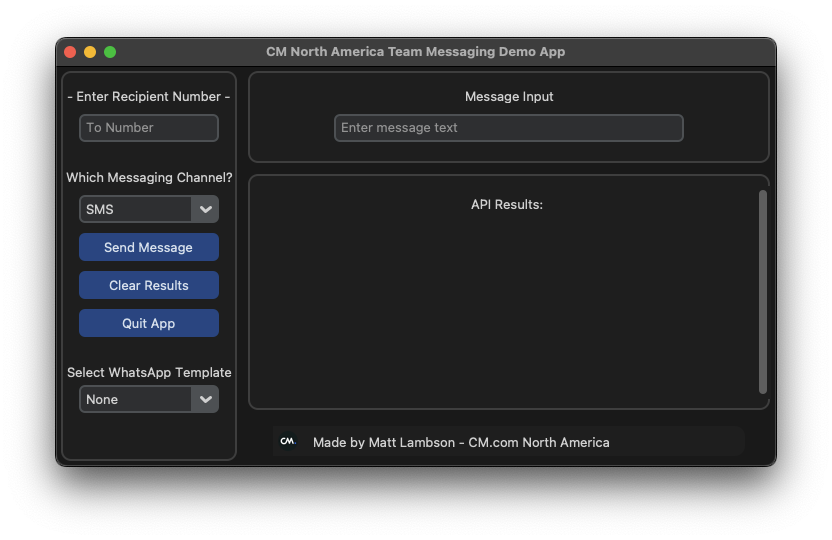

CM.com Business Messaging Demo App
An interactive demonstration platform for omnichannel messaging capabilities

Project Purpose
The CM.com Business Messaging Demo App was developed to provide sales reps and sales engineers with a hands-on demonstration of CM.com's omnichannel messaging capabilities. This interactive tool allows users to experience firsthand how different messaging channels work without needing to set up actual production environments.
Key Features
- Multi-channel message composer with real-time preview
- Support for SMS and WhatsApp for Business (other channels previewed were visual only to demonstrate they could use them with our API)
- Immediate Delivery Status of the API call being made so you can confirm whether the message/API call was successfully sent
Business Benefits
The demo app serves multiple purposes for CM.com:
- Enabling sales representatives to showcase some API capabilities during client meetings
- Providing potential customers with a realistic preview of the messaging experience
- Offering a training tool for new team members to understand product features
- Demonstrating the versatility of CM.com's messaging APIs across different use cases
Technologies Used
This application was built using Python with Tkinter/CustomTkinter for the user interface, integrating API calls to interact with a simplified version of the CM.com messaging API infrastructure.